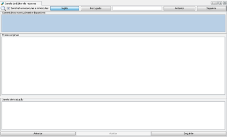
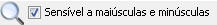
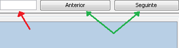
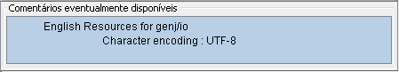
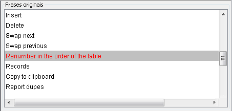
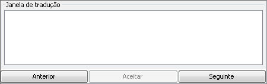

As minhas primeiras palavras, frases, enfim, traduções!
Vamos então começar a fazer as traduções em
falta. Ou a corrigir as existentes. Repare na imagem seguinte, a janela
do editor de recursos:

Podemos distinguir aqui uma pequena barra de botões, uma barra de
procura e três janelas principais.
Comecemos pela barra de botões, em jeito de tabela:

|
- permite ocultar/mostrar o painel do Explorador de ficheiros de recursos
|

|
- mostra a lista de documentos abertos
|

|
- permitem deslocar documentos de um lado para o outro
|
De seguida, temos a barra de procura, com duas possibilidades de filtragem.
A primeira,

onde podemos escolher entre procurar uma correspondência exata
entre maiúsculas e minúsculas, marcando a caixa, ou
ignorar as diferenças e procurar só pela sequência de
carateres.
A segunda,
ao clicar num destes botões, podemos escolher entre procurar no
texto original ou no texto já traduzido.
Após fazer estas opções, devemos introduzir o texto
a procurar na caixa (seta vermelha) e utilizar os botões (setas
verdes) para nos deslocarmos na procura.

Ambas as barras são utilizadas para navegação, não
para traduções propriamente ditas. Para tal, utilizamos as
três janelas abaixo. A primeira serve exclusivamente para leitura
de comentários informativos existentes nos ficheiros, que podem
inclusivamente conter instruções úteis para os tradutores.
Não queremos fazer nada aqui!

Na segunda encontramos o texto original, também este não
editável. A “preto”
estão as cadeias já traduzidas, a “azul”
as cadeias cuja tradução é igual ao texto original e,
finalmente, a “vermelho” as
cadeias que estão por traduzir.

A última janela e aquela que nos trouxe aqui, é a janela
de tradução. É nesta que vamos introduzir o texto que
será utilizado na versão localizada do Ancestris.

Nesta janela, dispomos de dois botões de navegação
entre as cadeias por traduzir e um botão de confirmação.
Este último é essencial para gravar a sua tradução.
Se não clicar no botão “Aceitar” toda
a sua tradução será descartada,
mantendo-se o texto existente.
Há aqui outras situações igualmente importantes a ter
em conta. Vai encontrar, no texto original, vários símbolos,
representando por vezes variáveis do programa, códigos de
formatação, etc. Estes símbolos e expressões
não devem ser alterados de forma alguma, sob pena de provocarem
erros no funcionamento do Ancestris. Veja alguns exemplos abaixo:
|
Criar evento {0} para {1}
|
As {xx} chavetas representam variáveis. Não editar.
|
|
ancestris/modules/webbook/WebBook
|
São hiperligações. Não editar.
|
|
<html>Marque a caixa para mostrar esta <br>mensagem.</html>
|
Etiquetas html entre < >. Manter igual aos originais.
|
Repare sempre na janela de comentários (a primeira, com o fundo azul). Muitos destes casos são mencionados ali.
Como vê, é bastante simples, basta selecionar os “vermelhos”
no ficheiro, clicando na linha respetiva da janela do texto original, ou usando
os botões de navegação da janela de tradução.
Posiciona o cursor na janela de tradução e… Traduz! :-)
!Nunca se esqueça de clicar no botão “Aceitar”!